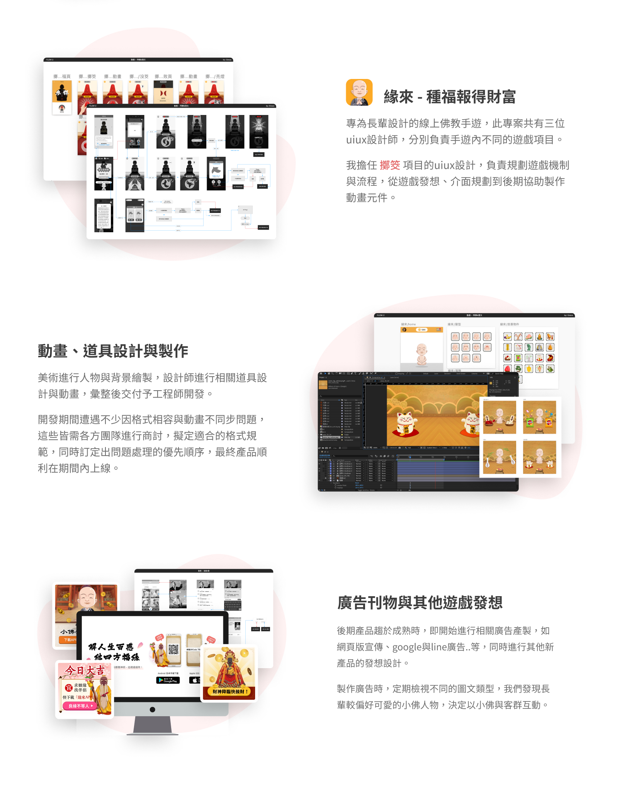

設計專案
關於我
下載履歷
\
緣來 - 種福報得財富
專案時間
2020.02
負責項目
流程規劃、視覺/動畫設計、企劃發想
使用工具
Sketch、Zeplin、After Effects、Illustrator
品牌介紹
緣來APP 唯一款專為長輩設計的佛教交友軟體，如佛說：人與人之間的緣分盡是牽引、相遇，希望能連結各方有緣人一同修行、結善緣。
產品目標
能夠線上拜佛、求籤問事與體驗各式小遊戲，也提供全台公廟祈福功能，與遊戲內的好友們創建公會，在人生修行的旅途中彼此相伴。
設計概念
現有交友軟體多以青少年居多，然而在高齡化的社會下，孤獨的長者越來越多，卻尚未看見任何專屬長者的交友軟體，因此開發此款APP，讓長輩們能透過相同的信念凝聚在一起。

問題與挑戰
市面上關於長輩的APP不多且皆缺乏成熟度，長輩使用手機的體驗不同於年輕族群，需與團隊商討該目標客群的使用習慣與用色偏好，並釐清使用者選擇該產品的動機，進行未來軟體內遊戲開發的研究方向，比起年輕族群熱愛新穎活潑的介面，長輩可能需要更多貼近於事實卻又帶點樂趣的風格。
Previous Work
Next Work